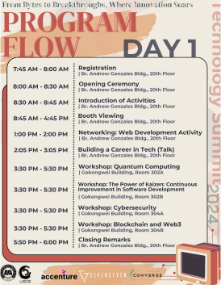
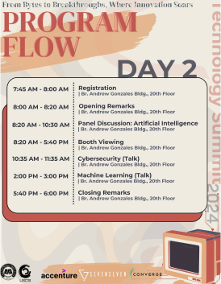
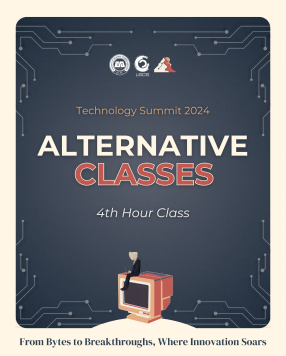

Archives contain the past posts of CATCH2T27 on the website and on our
Facebook page.
Update as of June 08 2024



Heads up tech enthusiasts! We have exciting news!
Check out our curated list of incentivized courses for Technology Summit 2024!
Enhance your skills and boost your career with these exclusive opportunities. Whether you're looking to sharpen your technical prowess, refine your leadership skills, or explore cutting-edge industry trends, we have something tailored just for you.
Don’t forget to pre-register! bit.ly/TS2024-PreReg
#38thLSCS
#TechnologySummit2024
Pub by Anna Katrina So
Caption by Kimi Valdez
Per CSO-PNP Approved OPA-09268
Check out our curated list of incentivized courses for Technology Summit 2024!
Enhance your skills and boost your career with these exclusive opportunities. Whether you're looking to sharpen your technical prowess, refine your leadership skills, or explore cutting-edge industry trends, we have something tailored just for you.
Don’t forget to pre-register! bit.ly/TS2024-PreReg
#38thLSCS
#TechnologySummit2024
Pub by Anna Katrina So
Caption by Kimi Valdez
Per CSO-PNP Approved OPA-09268


Hello Lasallians! Student Support reporting for duty! 🫡
We want to know what other commute routes you would like to know? 🧐 Comment it down below!
📩 For any concerns or inquiries, please contact:
• Juliana Tado | @tadojuliana
• Dave Gagala | @daveGAGALA
• Adie Tan | @adietan
• Sophia Reyes | @sophreyes
• Kyla Rodriguez | @KylaMarceloRodriguez
• Nathan Bufi | @Nathan_bufi
• Shaun Tria | @ShaunTria